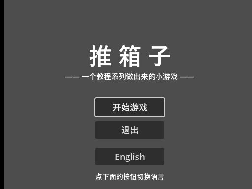
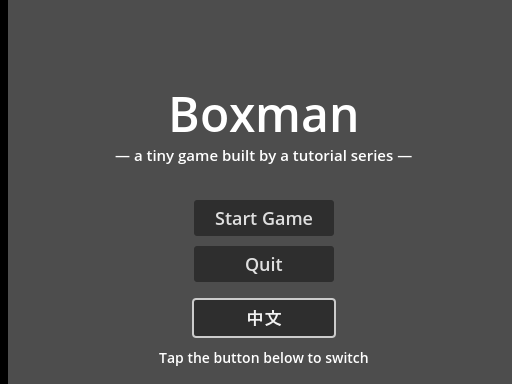
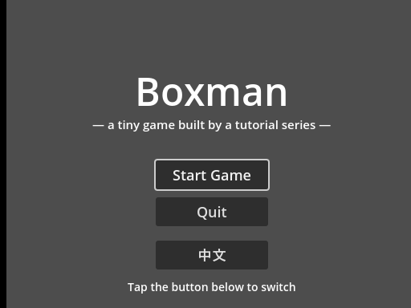

大家好，我是「山岚的运维笔记」。
入到发布阶段，第一件事唔系打包，系字。界面上嘅字要中英都切得，重启之后仲要记得住。
把"开始游戏"变成"Start Game"，本质就是查表：一个 key 对应两份文字，当前语言是英文就取英文那份。
引擎把这套查表做成了公共服务：往里登记两本字典，一本中文一本英文，取字的时候用 tr()，它按当前语言自动翻。你只管畀 key，拣边本字典系佢嘅事，完全唔使你操心。
官方正统做法是维护一份 CSV 表格，导入时自动生成翻译资源。词条多了就该这么干。但演示只有六条，直接用代码灌更轻：建一本字典，声明自己是中文，一条条加；再建一本英文的；两本都登记进查表服务。
三个细节：key 用大写英文，因为它要在代码里到处写，写成中文等于把中文焊死在代码里；切语言按钮的文案是反的——中文界面显示 English，它不是翻译，是路标；英文字典漏登记的词，界面上会直接把 key 吐出来——别嫌丑，漏词当场现形，比悄悄显示中文强。
控件上的字用 tr() 取，但 tr() 不是永久绑定，是取值那一刻查一次表。取完之后你切语言、字典翻了天，控件上的字都不会动。
所以切换语言必须两步：改当前语言，然后把所有字重新取一遍。
我第一次跑就栽喺呢度：切完英文，按钮全部变咗，底部嗰行提示语仲系中文——刷新列表漏咗佢。


多语言界面嘅灵异问题九成都系呢个：改咗语言唔记得刷控件。边个字唔听话，就去刷新函数度搵佢——多半压根冇登记，即刻补上就搞掂。
玩家拣咗英文，总唔可以次次开机都重新拣。老朋友 ConfigFile 再出场：往存档里新开一节存语言，进度归进度、偏好归偏好，一个文件分节管理。
兜底值这次格外重要：老玩家的存档里根本没有语言这一节，不写兜底值，一升级就拿到空值。经典兼容性坑，换件马甲又嚟过。

真要翻译整个游戏，工作量在"换字"不在"翻译"。三个建议：别用拼接组句子，整句做成带占位符的词条，语序让翻译的人自己定；按钮宽度留余量，中文两个字的地方英文可能一行；词条超过几十条就老实换 CSV，代码灌字典写到第三十行就知道疼了。
关键词：翻译服务、tr()、set_locale。代码灌词条省了流水线，切换的坑在明处，语言偏好进存档。到呢一步，界面上嘅字有资格上货架喇。
下一篇解决另一个上架硬门槛：存档位置。现在进度藏在玩家系统的犄角旮旯，想备份都没处找——第 20 篇把它挪到 exe 旁边，跟游戏形影不离。
界面识讲话喇，值得点赞、在看来一套；想睇游戏练成可执行文件嘅，关注「山岚的运维笔记」，下一篇接着。评论区有问必回。